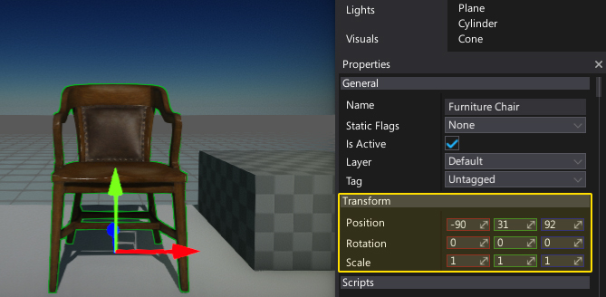
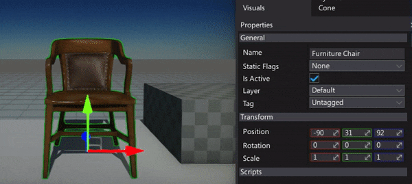
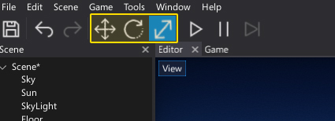
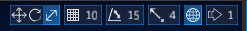
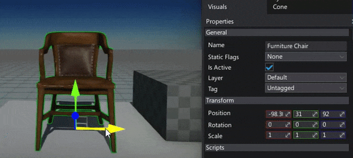
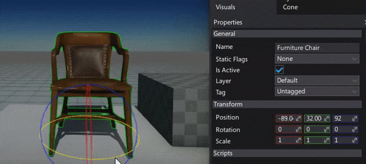
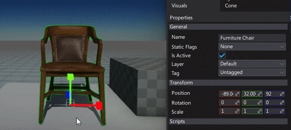
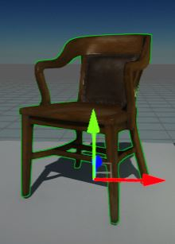
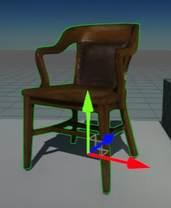
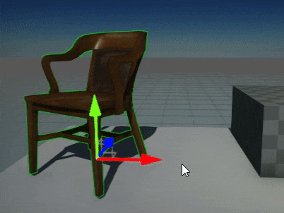

Transforming Actors
To setup you scenes you need to move, rotate and scale actors. There are two major ways to transform actors in editor.
Transform property
If you select one or more actors you can modify their properties in a Properties window. This includes editing local transformation.

You can also use sliders near the transform properties to edit object quicker.

Transform gizmo
The most common way to transform objects is by using transform/rotate/scale gizmos. Using those widgets is one of the most essential parts of the level design because it allows you to place the objects using you mouse.
To change the transform gizmo widget mode use keys 1, 2 and 3 or toolbar buttons:

Editor viewport shows a set of buttons and options in the upper right corner. You can use them to adjust the gizmo settings.

Translation widget

Translation gizmo moves selected objects along particular axis (or plane). To use it click on an axis (red, green or blue) and drag it. You can also move objects along the plane (use gray quads).
Rotation widget

Rotation gizmo rotates selected objects along particular axis. To use it click on an axis circle (red, green or blue) and drag it.
Scale widget

Scale gizmo scales selected objects along particular axis. To use it click on an axis (red, green or blue) and drag it. You can also uniform scale objects by using a gray box in the center of the gizmo.
World and Local transformation space
Transformation widget can transform objects in two modes: world and local. In world mode gizmo widget is aligned to the world coorinates (left-handed unit X, Y and Z). In local mode, gizmo widget is aligned to the object transformation frame. In local mode editing local transformation of the objects is easier.
You can toggle the active transformation space with a widget:
| World | Local |
|---|---|
|  |  |
Snapping
You can snap transformations to the grid. This means that the degree of transformation you apply to actors is rounded to the closest multiple of the number you specify. For example, if you set the rotation snap value to 10, actor rotate in multiples of 10 (0, 10, 20, 30, etc).
If you transform objects hold the Ctrl key to snap the values. Snapping can be configured using a widget buttons:
Duplicate the actor
You can duplicate selected objects with a transform gizmo if you hold a Shift key and start transforming objects.
